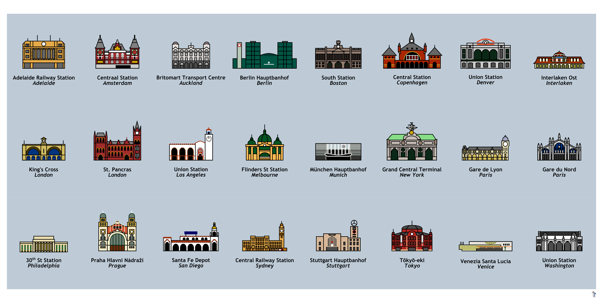
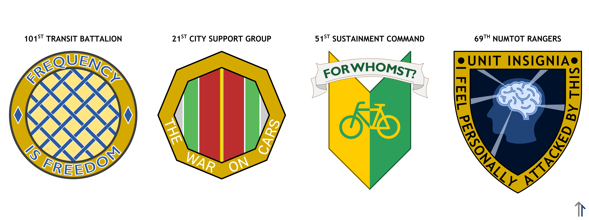

I am not a trained artist or designer in any way. But art is fun! And having learned Inkscape to make passable maps, why not make other stuff? Here's a smattering of what I've put together. (In reverse chronological order so you can judge my growth—or lack thereof.)
I'm not completely sure where the inspiration for this came from. I think it was a combination of (1) seeing all sorts of cool enamel pin designs out there and wanting to channel that minimalist, thick-lined style; (2) moving to Melbourne and being taken with Flinders Street Station, which is such a departure from the concrete columned neo-classical boxes often named Union Station in the US; and (3) discovering the mini-terminals/termini pun and running with it. At any rate, I ended up sketching out a couple dozen stations I've visited (plus Prague by request) before calling it a collection. I might still add more in the future—I'm open to requests.

If we're gonna fight this War on Cars, maybe we need some Distinctive Unit Insignia? (Probably should organize ourselves into actual units first, but that's but a detail.)

During the Cubs' World Series run, I needed something to keep my mind distracted on the nights they didn't play. I couldn't get baseball entirely out of my mind though, so (using data from retrosheet.org) I made two Sankey Diagrams: one for every at-bat in the 2015 Regular Season (2016 data not being available at the time), and one for every World Series.
For the first several years of YPT SF Bay's existence, they (/we) created a set of buttons for members to wear. It was an open submission process, and I submitted four designs in early 2014.

Clockwise from the upper left: